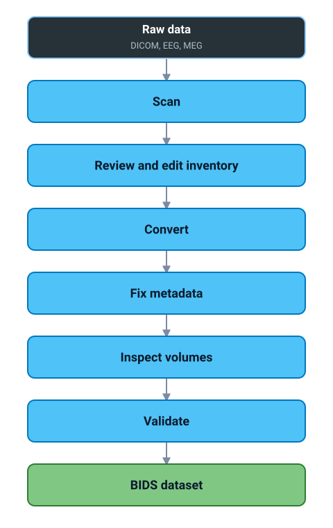

Convert
Scan a raw folder, review every conversion decision in a 51-column TSV, run per-subject conversion with atomic rename. dcm2niix for MRI; mne-bids for EEG / MEG; bidsphysio (vendored) for physio.
BIDS Manager turns DICOM, EEG, and MEG recordings into BIDS-compliant datasets with a spreadsheet you can fix at any step. One install, one GUI, one CLI, the same engine underneath.
Built around the BIDS schema as the engine, not a check at the end. Same rules drive scanning, naming, GUI form generation, validation and sidecar audits.
Scan a raw folder, review every conversion decision in a 51-column TSV, run per-subject conversion with atomic rename. dcm2niix for MRI; mne-bids for EEG / MEG; bidsphysio (vendored) for physio.
Open the result, navigate the BIDS tree, edit JSON sidecars in a schema-aware form, inspect NIfTI volumes (tri-view + 4-D time series), validate file / folder / dataset.
Bootstrap installers for macOS / Linux / Windows. In-GUI auto-update checks PyPI on launch. The Windows file-lock problem is handled by a detached helper. Themes, font scale, and logo are configurable.
Every layer reads from the same BIDS schema: classification, naming, GUI form generation, validation, sidecar audits. No heuristic files to maintain, no per-site special cases.

The Converter scans your raw data and produces an inventory TSV. The Editor opens the converted BIDS root and lets you fix metadata against the same schema. Both panels live in the same window; the schema engine sits underneath them both.
# pip install (any OS)
pip install bids-manager
bidsmgr
Or use the per-OS bootstrap installer for a fully isolated portable Python with one double-click. Read the full installation guide →